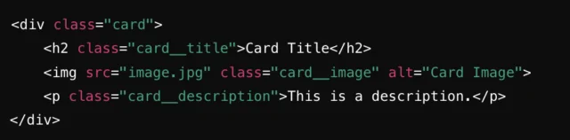

Las metodologías BEM y camelCase son enfoques utilizados en desarrollo web, especialmente en el nombramiento de clases, variables o elementos para mejorar la legibilidad, mantenimiento y consistencia del código. Aunque sirven para fines diferentes, a menudo se utilizan juntos en proyectos web modernos.
¿Qué es BEM (Block Element Modifier) y por qué es importante?
BEM es una metodología de trabajo para la escritura del CSS. Corresponde a las siglas Block Element Modifier y básicamente permite definir el CSS agrupando las reglas en esos tres elementos, el bloque, el elemento y el modificador. Enseguida vamos a entrar en detalle para que puedas entenderlos bien. Este método de estructurar el CSS permite que los componentes sean reutilizables y el código CSS fácil de mantener, sobre todo cuando varios componentes de un equipo necesitan trabajar sobre el mismo proyecto.La clave de BEM se basa en fijar una manera clara y predecible para definir las clases CSS y otros selectores, lo cual nos ayuda a evitar conflictos, garantizar que cada componente esté claramente separado y se pueda reutilizar con más facilidad. Sus efectos positivos se aprecian sobre todo en proyectos medianos o grandes.
¿Cómo Funciona BEM?
- Bloque: el componente de más alto nivel y sirve como base de su estructura de código. Piense en un bloque como una pieza autónoma y reutilizable de su interfaz. Puede ser cualquier cosa, desde un menú de navegación hasta un botón o un formulario. La idea clave es que un bloque representa una parte distinta y funcional de su sitio web o aplicación.
- Elementos:los componentes que componen esos bloques. Los elementos dependen de los bloques y no pueden existir independientemente—siempre pertenecen a un nombre de bloque, seguido del nombre del elemento.
- Modificador: una bandera que agrega a un bloque o elemento para cambiar su apariencia, comportamiento o estado.
Ejemplos de código BEM
- 

Si tiene un componente de tarjeta en su sitio web con un título, imagen y descripción. En BEM, puede comenzar con un .tarjeta bloque:
Si necesita agregar un botón a la tarjeta, en lugar de anidarla profundamente, simplemente agregue un nuevo elemento dentro de la tarjeta .tarjeta bloque:
Por Qué BEM Es Tu Mejor Apuesta para CSS Escalable
En general, la escala está inclinándose al uso de BEM en todos los proyectos futuros. No mire a BEM como un solucionador de problemas, sino más bien como una solución a largo plazo para construir una base de código de larga data y adaptable. BEM no es solo otra palabra de moda en el mundo del desarrollo front-end,— utiliza una metodología probada que simplifica su código, aumenta la colaboración y escala sin esfuerzo con sus proyectos. Ya sea que esté construyendo un sitio web pequeño o una aplicación web masiva, la estructura clara de BEMM y las convenciones de nombres ponen orden en su CSS, lo que facilita su administración y mantenimiento a medida que crece su base de código.
CamelCase
Camel Case (también conocido como camelCase o dromedary case) es una convención de escritura utilizada principalmente en programación y desarrollo de software para nombrar variables, funciones, métodos, clases y otros identificadores. Esta convención consiste en escribir frases o palabras compuestas sin espacios ni guiones, donde la primera palabra comienza con minúscula y cada palabra subsiguiente inicia con una letra mayúscula. El nombre «Camel Case» proviene de la forma visual que generan las mayúsculas intermedias, que parecen las jorobas de un camello.
Video explicativo sobre camelCase
Ventajas de usar Camel Case
- Mejora la legibilidad: Al eliminar espacios y usar mayúsculas para separar palabras, es fácil identificar visualmente cada palabra dentro del identificador.
- Compatibilidad con la mayoría de lenguajes: La mayoría de lenguajes de programación no permiten espacios en los nombres, por lo que Camel Case es una forma estandarizada de tener nombres compuestos.
- Evita ambigüedades: En comparación con otros métodos, como usar guiones bajos o todo en minúsculas, Camel Case destaca cada palabra y reduce confusiones.
Ejemplos de código camelCase


Comparación entre BEM y camelCase
| Aspecto | BEM | camelCase |
|---|---|---|
| Uso común | Clases CSS | Variables y funciones |
| Legibilidad | Alta | Media |
| Organización | Muy estructurada | Más flexible |
Se recomienda usar BEM para nombrar clases en CSS y camelCase para nombres en JavaScript.
Aplicación práctica con CSS
Ejemplo visual con BEM
Esta tarjeta fue diseñada aplicando clases BEM y estilos CSS organizados.